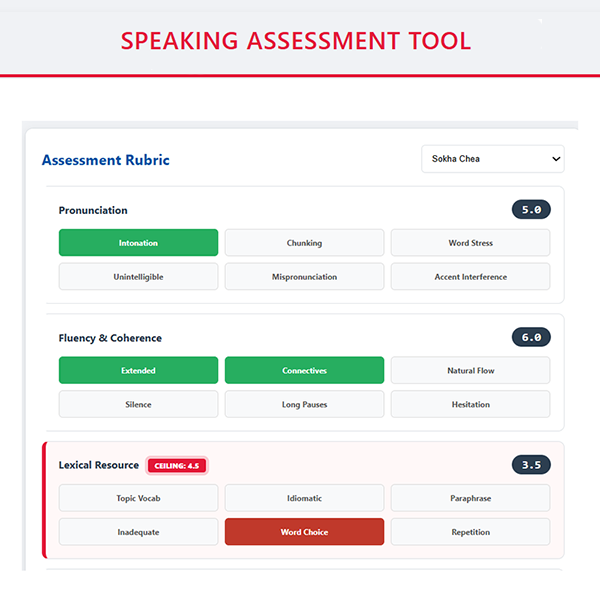

I build assessment and curriculum tools that work in real classrooms.
I'm a frontend architect and ESL teacher based in Cambodia. For the past three years I've been building EdTech tools for classrooms where connections vary and devices are shared. Before that, I spent two decades on checkout flows for global retail brands and accessibility systems for healthcare. The common thread: I design interfaces that respect the user's context. I start simple and add complexity only when the problem demands it.
How I Build
Vanilla-First
I start with HTML, CSS, and vanilla JavaScript. I add a framework only when the problem is architectural and the team scale demands it. The tools I make run on the devices schools already have.
AI-Trained, Not AI-Dependent
I use AI as a reasoning partner, not a replacement. My agents are trained on patterns from mentors and experts I trust, with standards built in from the start. Every generated solution gets reviewed and refactored before it ships.
Classroom-Tested
Every educational tool I build is tested with real learners in real classrooms, under real conditions, before it ships.
Selected Work

Testing Speaking Evaluator
A Progressive Web App for real-time testing speaking assessment. Evaluators score against rubrics while the tool flags where a student's performance in one area limits their overall result.

Lesson Prepper
One pipeline from raw text to editable PowerPoint: text → structured lesson plan → customizable slide layout → PowerPoint export. Saves me 20+ hours of prep time per week. If you're working on similar issues, ask me about it.

Khmer Learns English
A reference site documenting 25 L1-to-L2 transfer patterns for Cambodian English learners. Covers phonology, grammar, and pragmatics with proficiency bands, dialect notes, and classroom-ready activities. Built for teachers who need evidence-based explanations, not generic ESL worksheets.
What I'm Building Now
- Building a grammar tutoring tool for Khmer-speaking students
- Cirriculum Builders
- Exploring how AI-assisted assessment marking can speed up feedback without sacrificing accuracy
Documents
Resume and sample syllabi.
If you're building EdTech, assessment systems, or low-bandwidth tools, I'd like to hear what you're making.
I don't pitch ideas I haven't built. If you're working on similar problems, let's talk.
jeremy.ivy@gmail.com trending_flat